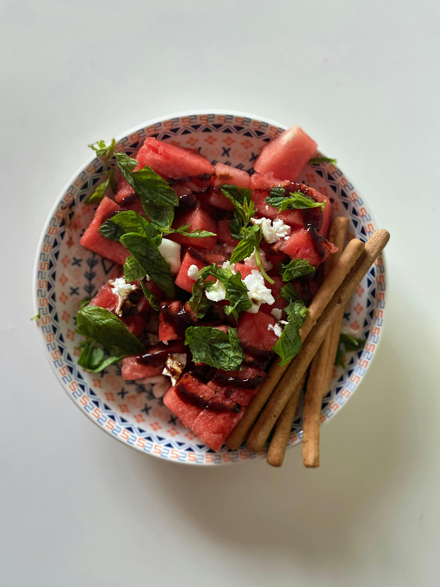

Watermelon Salad With Feta
Great for the summer!
This refreshing watermelon salad with feta is perfect for by the pool or a side dish at a bbq!

Ingredients
- 3 Tablespoons Olive Oil
- 2 Teaspoon White Balsamic Vinegar
- 1/2 Teaspoon Kosher Salt
- 8 Ounces Grape Tomatoes
- 3 Cups Arugula
- 1 Cup Sliced Red onion
- 2 Pounds Watermelon Cubed
- 4 Ounces Feta Cheese
Steps
- Whisk olive oil, vinegar, and salt together in a large mixing bowl.
- Add tomatoes, arugula, and red onion; toss to coat.
- Gently stir in watermelon and feta cheese to serve.